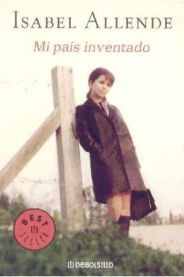
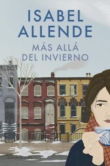

Isabel Allende
Fecha: 16 de agosto de 2021
Fuente: Bárbara Schijman (Página 12)
- Mujeres del alma mía está inspirado en algunas mujeres que han sido fundamentales en su vida. ¿Qué ha hecho que estas mujeres fueran “extraordinarias” para usted?
- En medio de ese contexto, ¿qué hizo que pudiera imaginar una sociedad más justa?
- En un apartado de Mujeres... dice que “el lenguaje determina la realidad y la forma en que pensamos”. ¿Qué piensa del lenguaje inclusivo y qué lugar le da en su trabajo?
- ¿Cuánto le debe su producción literaria a la memoria?
- ¿Cómo era ese lugar?
Las considero extraordinarias por quienes son o quienes fueron, pero también y sobre todo, por la relación que hemos tenido. Les debo todo lo que yo soy a algunas mujeres excepcionales, o no excepcionales, que estuvieron conmigo. Siempre digo que no habría podido hacer nada en la vida si no fuera por mi madre, por Paula, por mi abuela, que se murió cuando yo era muy joven pero dejó un tremendo legado, por mi nuera, por las mujeres que me ayudaron a ser periodista cuando yo no sabía ni siquiera escribir dos frases, como mi agente, Carmen Balcells, y por muchas otras mujeres que conozco a través de mi fundación. Yo diría que hay muy pocos hombres que cumplieron ese papel en mi vida. Mi abuelo cuando yo era chica, mi padrastro, que sin ninguna duda fue el reemplazante de mi padre, lo hizo mucho mejor que cualquier padre, y mi hijo Nicolás. Y no menciono a los maridos, a los amantes ni a los amigos porque ninguno, ni los colegas tampoco, me ayudaron como las mujeres. Por eso siento una gran solidaridad femenina. Me da rabia cuando me hablan de la rivalidad entre mujeres, porque eso es lo que el patriarcado ha hecho más visible, pero esa no es la verdad. Las mujeres son muy solidarias entre ellas.
Crecí con una conciencia muy clara de la injusticia, no solo la injusticia que veía en mi mamá, en comparación con sus hermanos, sino sobre todo con las empleadas que trabajaban en la casa, que eran de escasa o nula educación, pobres de solemnidad... Dormían en una especie de celdas sin ventana, con un baño que era un excusado y un lavatorio. Mientras que la parte del frente de la casa era lo que se le presentaba a las visitas, y ahí estaba la biblioteca, el salón, etc. Para atrás iba la casa descendiendo de nivel, donde estaban los niños, las empleadas, los animales domésticos. No fui la única en notar esa diferencia tremenda; mis hermanos también. Cómo sería lo que veíamos... Creo que mi rebeldía la asustaba a mi madre. Ella hubiera querido protegerme de todo eso y que yo calzara en la sociedad, que tuviera una vida mucho más segura de la que había tenido ella.
Depende mucho de dónde te toque. El próximo año voy a cumplir 80... Entonces no es fácil para mí, pero entiendo la idea, la respeto muchísimo y trato de adoptarla. El feminismo planteó la cuestión del lenguaje en sus comienzos. El lenguaje es importante, porque es la clave de quién tiene el poder. Tal como la historia la escriben los vencedores, que son siempre hombres y generalmente blancos, tenemos una historia que ha omitido, silenciado y transformado una parte fundamental de la vivencia humana. Las mujeres tenemos que rescatar eso y en eso estamos. ¿Cuál es mi objetivo cuando escribo una novela histórica, que he escrito muchas? Mi objetivo es contarla desde la voz de la mujer, del que perdió, del pobre, del marginado, del niño; desde todas esas voces que no están en la historia. Y eso es lo que más me interesa, rescatar todo eso, porque tiene que ser parte de quienes somos como humanidad y entenderlo.
La memoria es importante; la memoria personal como la memoria colectiva. Es muy fácil echarle tierra a lo que ha pasado en las dictaduras de América Latina, por ejemplo; echarle tierra para seguir mirando hacia adelante como dicen. Pero es que si no recuerdas el pasado vuelves a cometer el mismo error. Y hay una cierta impunidad para el crimen, y eso tiene que evitarse. Me interesa eso, en materia histórica también. Me interesa lo que pasó mucho antes de que yo naciera, porque eso determinó mucho de lo que pasó después. Hay momentos históricos fascinantes que me gusta rescatar, como la Revolución Francesa, la revolución de los esclavos en Haití o el feminismo, porque son momentos en que la humanidad adquiere una nueva conciencia. Y en lo personal, me doy cuenta de que mis raíces más profundas de la memoria están en el sótano de la casa de mi abuelo, donde yo jugaba de chica.
Un lugar al que no entraba nadie. Humedad, ratones, cables de electricidad colgando... No sé cómo no me electrocuté en ese sótano. Pero ahí, en ese lugar, que era como un útero, volaba la imaginación, leía con una vela, era mi mundo; un mundo al cual vuelvo muchas veces en sueños. También cuando escribo, cuando pienso, lo primero que me viene son las raíces de la infancia, y eso me ha sostenido a lo largo de la vida, porque he sido siempre extranjera, una persona desplazada que ha vivido siempre moviéndose de un lado a otro. He sido hija de diplomáticos, exiliada, inmigrante, siempre extranjera. Cuando vuelvo a Chile también soy extranjera allí, porque he pasado demasiado tiempo afuera. ¿Entonces dónde tengo yo la plataforma de despegue, digamos? En mi infancia, en esa primera infancia. Por lo tanto la memoria es importante. Y luego yo hago un esfuerzo de imaginación y de amor para mantener viva la memoria de las personas que ya no están aquí conmigo: Paula primero, mi mamá, el tío Ramón, mis abuelos, amigos, tanta gente que se ha ido. Mi ejercicio de memoria los mantiene conmigo, y por supuesto las fotos de ellos que están por todos lados.
Recomendaciones de Isabel Allende

Violeta
Isabel Allende
Amor
Isabel Allende

Mi país inventado
Isabel Allende

Más allá del invierno
Isabel Allende